2.2. The ACAB addon¶
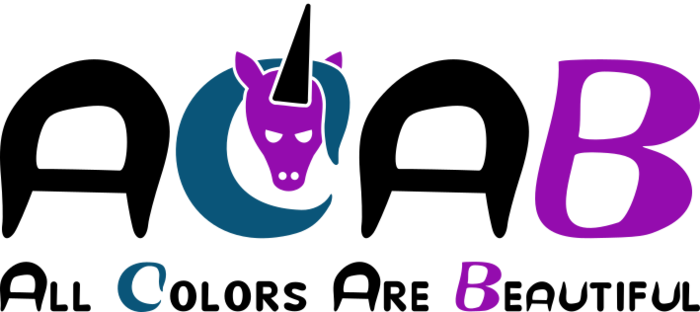{kind=link}
2.2.1. Introduction¶
The ACAB [All Colors Are Beautiful] addon of molsys.mol.mol takes care of coloring crystal nets. The goal is to use colors to weave frameworks (MOFs, COFs, ZIFs, and the like), to suggest novel materials, and to support earlier syntheses.
2.2.1.1. Disclaimer¶
If your background is Maths, coloring nets may not be confused with graph coloring. Please consider colors just as labels in the sense of graph labeling. Our design choice to call general-case labels as colors instead of just labels is intended to help non-mathematicians to grab the concepts here exposed.
2.2.2. Motivation¶
2.2.2.1. Isoreticular Isomerism¶
To build a framework, its molecular constituencies are connected according to a given topology. In other terms, the building blocks (or just blocks) are weaved according to a given net. This is done assigning each block to an edge or (more often) vertex of the net, then the block is rotated to “match” its connectors to the surrounding blocks’ connectors (its slot). For further technical references, see weaver.framework.framework.
{kind=link}
As Bureekaew et al. highlighted, 16 there exist cases where a framework and its deconstruction in terms of given blocks is not always bijective, i.e. one cannot deconstruct a framework and construct it again reversibly. Indeed, the deconstruction process - the Topological Approach [TA] - is unambiguous for a given set of blocks, 1 whereas the construction process - the Reverse Topological Approach [RTA] - can end up with multiple frameworks out of the same starting nets and blocks. This phenomenon is called isoreticular isomerism and the resulting frameworks are distinct chemical species - they may be even stereoisomers! - with different pore shapes and sizes, physico-chemical properties, and so forth. That is why isoreticular isomerism must be taken into consideration by materials researchers.
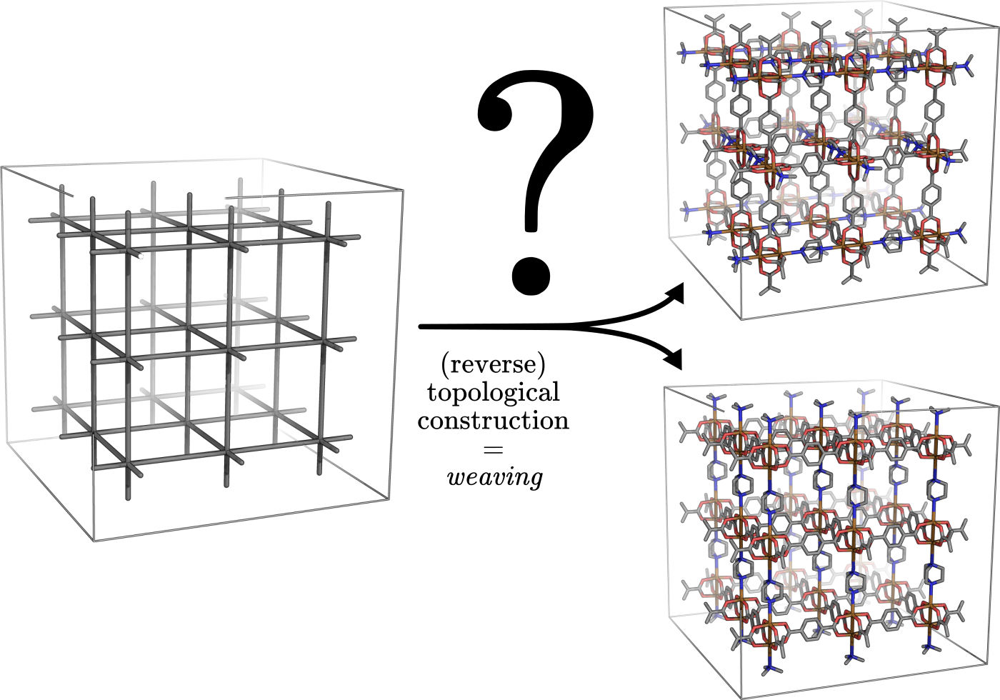{kind=link}
2.2.2.2. Block multiplicity¶
The necessary condition for isoreticular isomerism is the block multiplicity.
Asymmetric blocks which lower the connectivity symmetry of their slots can rotate multiple different ways and then connect accordingly. The framework may show an orientational multiplicity. This is for example the MOF-505/NOTT-100 case described in 16, where the rectangular linker enters a square slot.
Different blocks that can be assigned to the same vertex type (or edge type) can scramble their position multiple ways and then connect accordingly. The framework may show a translational multiplicity. For instance, this case always arises when defects are involved and no given defect correlation is forced. Multivariate frameworks may show this multiplicity too.
Block multiplicity is not a rare property. Let’s take the paddlewheel, which is among the most representative clusters in MOFs.
When the paddlewheel is unsaturated, just the 4 carbon atoms of the carboxylate moieties count as connectors. These connectors draw a square shape, which fits any nets with planar 4-connected vertices without decreasing the symmetry. That is because the square symmetry group contains the symmetry group of any planar quadrilateral.
When the paddlewheel is saturated, the 4 carbon atoms and the apical 2 metal atoms draw a compressed octahedron. No matter the symmetry of its surroundings, there are different inequivalent rotations of the paddlewheel, being 3 the minimum in the case of a regular octahedral slot (these rotations coincide with the 3 orientations of the axes).
Block multiplicity is not sufficient to obtain isoreticular isomers. For instance, a paddlewheel and two symmetric linkers - one with carboxylate moieties and the other with nitrogen connectors - can build only one framework with that net (no isomerism) since the chemistry of the problem constraints paddlewheel rotation to be only one: carbon with carbon and metal with nitrogen. (see further here)
Another trickier example is the family of pillared MOFs based on a pcu net with symmetric linkers and saturated paddlewheel. If only the unit cell (i.e. just one vertex) is chosen to represent the bulk MOF, then the paddlewheel and its surrounding linkers rotate synchronously with all their periodic images. The picture changes when we consider supercells, allowing for isoreticular isomerism. (see again here)
2.2.2.3. Why colors?¶
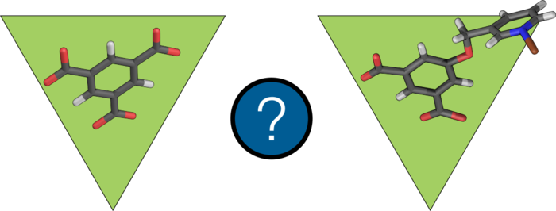{kind=link}
Here we show several descriptions to represent two different blocks into the same slot. The slot is made of 3 vertices, which draw an equilateral triangle. Regarding the blocks:
the first block is 1,3,5-benzenetricarboxylate, commonly known as trimesate and shortened as btc: it is a well-established block in the framework community;
the second block is 5-(3-pyridinylmethoxy)-isophthalate, which the paper 16 refers to as L3.
For our purpose, the difference to stress here is that the 3 btc moieties are all equivalent, whereas L3 has 2 carboxylate moieties and 1 N-donor function (the pyridinyl).
Here we show several descriptions to represent a block into its slot. We are interested in the connectivity between the block and the slot, therefore in the L3 case any conformer is neglected.
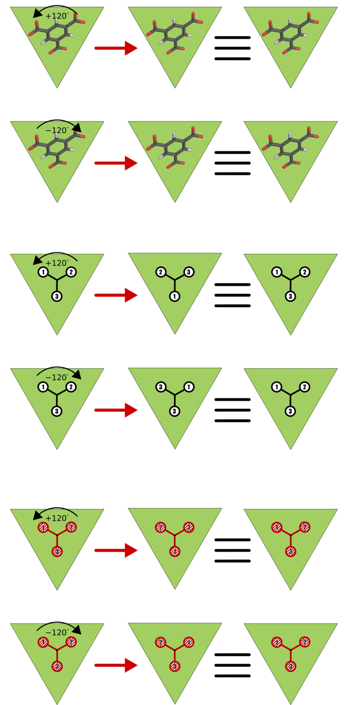{kind=link}
If we put the btc into an equilateral slot, there are 3 different orientations which reduce the distance between each carboxylate moiety and one of slot’s vertices. 13 These orientations are the most chemically reasonable. If one applies a symmetry operation which belongs to the slot’s space group, the 3 orientations are all equivalent: they seem the same if we do not track the original atomic positions by indices.
Coloring the carboxylate termini with a red code is an equivalent description of the same structures. No matter the symmetry on the full-red ball-and-stick model is applied, the model remains the same.
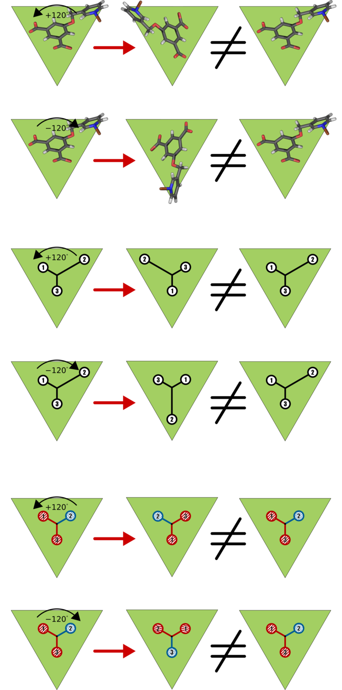{kind=link}
For the L3 case, the most chemically reasonable orientations are 3 too. The difference here is when the symmetry operations of the same slot’s space group are applied. For instance, a rotation of 120 degrees lets the pyridinyl connect a different vertex of the triangle. That is evident even without tracking the original atomic positions by indices.
Coloring the carboxylate termini with the red code and the pyridinyl part with a blue code makes the ball-and-stick model two:one red:blue. Any symmetry of the slot’s space group acts on the molecule and on the 2-red,1-blue model the same.
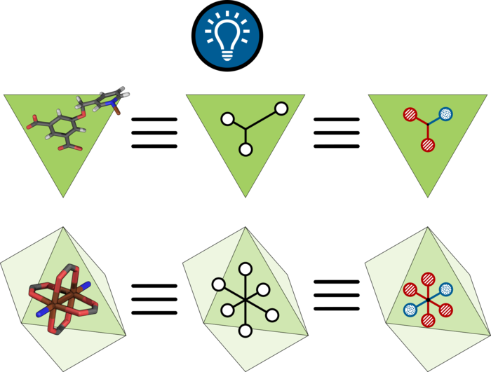{kind=link}
The same concept can be applied to a paddlewheel in a regular 6-connected slot, which is like a compressed octahedron inside a regular octahedron. If the carboxylate moieties are red and the metal ions are blue, then we have a 4-red,2-blue block. Applying any slot’s space group symmetry can result at maximum into 3 different orientations, i.e the paddlewheel metal dimer along the axes of the slot.
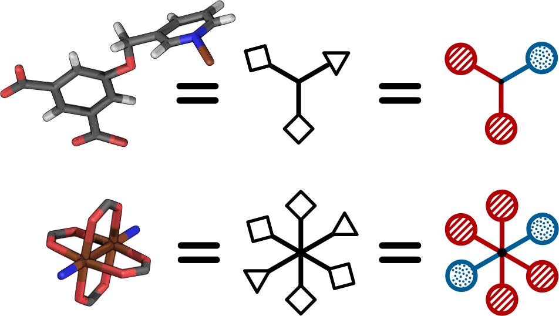{kind=link}
Eventually, our message is:
these descriptions are all equivalent
with respect to the symmetry of a block into a slot.
Humans discern symmetry many ways, whereas machines need numbers. To us, the color representation is the best compromise between the human and the machine understanding of symmetry loss.
2.2.3. Overview¶
2.2.3.1. advanced Reverse Topological Approach¶
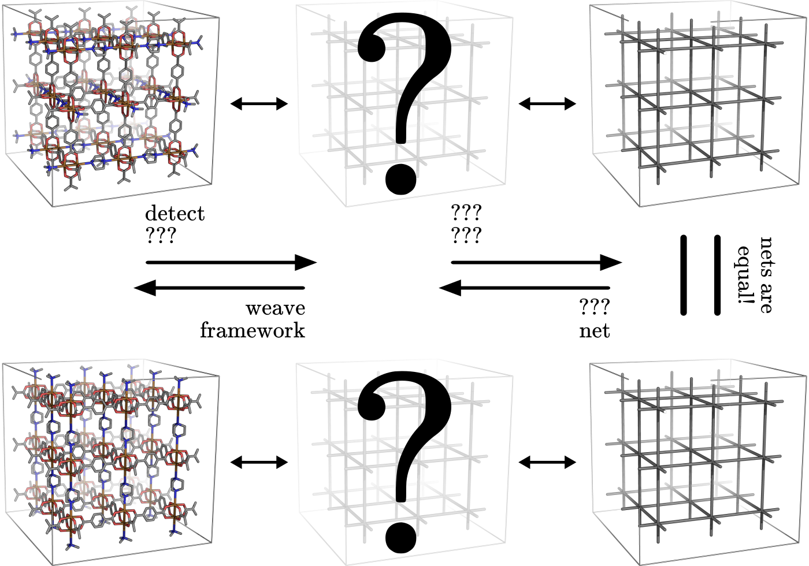{kind=link}
ACAB is part of the implementation of the advanced Reverse Topological Approach [aRTA]. The original RTA 16 takes into consideration only the orientational multiplicity of the blocks, leaving the user to handle any translational multiplicity outside the approach. Conversely, aRTA includes the translational multiplicity in the scheme.
These two different multiplicities - translational and orientational - can be handled one step at the time or at the same time.
A stepwise aRTA - first translational, then orientational multiplicity - permits to focus on the single contributes. Apart from formalizing the first step, this is just an extension to perform before the original RTA.
A concerted aRTA - both the multiplicities together - allows a better inter-dependence of the two. This was not formalized by the original RTA.
{kind=link}
The choice of which aRTA fashion to use depends on the chemistry, its encoding in the problem, the solver, and ultimately on user’s preferences. In general, when either multiplicity dominates the other, then the stepwise aRTA is clearer and easier. When neither wins, the combined aRTA is more efficient.
2.2.3.2. Workflow¶
The aRTA workflow to weave (zero,) one or more frameworks from scratch is the following:
Choose net
– The net may be invented, generated, or download from a database (e.g. MOF+). In the current implementation of :py:module:`weaver` the embedding of the net is crucial and different frameworks may result. This weakness may be alleviated with an educated guess on the embedding, e.g. choosing the maximum symmetry embedding, or perform a purely geometrical pre-optimization e.g. with TopoFF. 17
Color net (here ACAB comes into play)
– The net is colored representing the position of a block, its rotation, or even both. Constraints on number and arrangement of colors encode the chemistry of the problem: concentrations of blocks, specific block position and rotation, specific bond connectivity, other geometrical considerations. Constraints are invariant with respect to the embedding as long as they do not rely on coordinates (e.g. the color ratio); others change according to the embedding (e.g. concepts like colors in an axis or on a plane) and could need several attempts to fine-tune this kind of constraints for your problem. N.B.: if the possible coloring nets are more than one, then more than one framework can be weaved: we have isoreticular isomerism. If there exists no possible coloring, then no possible framework can be weaved under the given constraints (there is no colored net which a framework can be weaved on!): if so, aRTA workflow stops here.
Weave framework(s)
– The framework is weaved according to the positions and rotations encoded by the colors. TBI: automatic anisotropic resizing of the net to host blocks inside.
Optimize framework(s)
– The framework is optimized for a given level of theory which satisfies user’s needings.
Analyze framework(s)
– Perform your favorite tools of analysis on the found framework(s).
Rank frameworks
– If more than one framework is found, then it is worthy to sort frameworks according to their properties, e.g. their optimized energy or pore size or similarity to an experimental structure.
2.2.4. Installation¶
To run ACAB you need the following:
molsyswhich can be get:
– from MOF+ GitHub with the following command if you have a GitHub account with MOF+ reading priviledges:
$ git clone ssh://git@github.com/MOFplus/molsys # most recent version
– or from the secret machine called secret (it is a reasonably updated version):
$ git clone ssh://name@secret/home/repo/tmp/molsys
its related dependencies (mainly
spglib) using:pip install spglibpytestfor testing purpose using:pip install pytest
Please do not forget to add the molsys folder $MOLSDIR to your $PYTHONPATH.
2.2.4.1. SCIP and PySCIPOpt¶
Current version of ACAB uses SCIP [Solver for Constraint Integer Programming] and PySCIPOpt [its python interface]. Other solvers like MC or GA are not available at the moment.
SCIP with its suite can be downloaded via scip website filling a very brief form. ACAB is tested with SCIP 5 and SCIP 6. PySCIPOpt, which can be cloned or downloaded *via* GitHub, is updated by design just after a new SCIP release, so there should not be any problem with inconsistent versions between them. ACAB is tested against the current versions (24.10.2018) of SCIP and PySCIPOpt.
If you are brave enough/have no time to bother with dipendencies, I prepared a script in the secret machine which runs automatically the installation of both.
Since the script uses
sudo-er’s priviledge, please do not trust it blindly and see where thesesudo-es are needed:
$ ssh name@secret grep 'sudo' /home/repo/codes/scip/install.sh | grep sudo
If you are still suspicious, run:
$ ssh name@secret cat /home/repo/codes/scip/install.sh
If the script is above your level of trust, you can install
scipandpyscipoptin a glimpse:
$ scp name@secret:/home/repo/codes/scip/install.sh scip_install.sh
$ ./scip_install.sh
TIP: By default, only scip will be tested. If you installed pytest previously, pyscipopt will be tested too. Testing ACAB is not automatically done by the install.sh script: see Tests.
2.2.5. Examples¶
2.2.5.1. 2,1-edge colored unit cell pcu¶
A minimal working example for ACAB will be as follows:
import molsys
m = molsys.mol.from_file("pcu")
m.addon("acab")
m.acab.setup_model()
m.acab.setup_ecratio([2,1])
m.acab.cycle_loop()
Let’s analyze step by step what’s happening here.
import molsys
– import molsys module, which should be available irrespective to whether you have properly installed ACAB. Please read :py:module:`molsys` troubleshooting if it does not work.
m = molsys.mol.from_file("pcu")
– read “pcu.mfpx” file, the pcu [primitive centered unit] net file with periodic connectivity to each image of the unit cell. If you have not got this mfpx file: 1)go it here; 2)click “Download coordinates” at the bottom of the page; 3)save the file; 4)move the file to the directory of your script. In alternative, you can use MOF+ api: mofplus.user_api.
m.addon("acab")
– add the acab attribute to the m instance. m.acab is now the interface to access ACAB features, and m.acab.Model is the interface to PySCIPOpt.
m.acab.setup_model()
– setup constraint integer model as instance of the pyscipopt.Model class. The model has currently no variable or constraint. m.acab.vvars and m.acab.evars are now empty dictionary of vertex and edge variables, respectively. N.B.: Anytime this method is called, a new instance will be made, so the previous variables and constraints will be wiped out and the dictionaries of variables reset.
m.acab.setup_ecratio([2,1])
– setup overall edge color ratio of the net as constraint of the model. Each number refers to the colors in increasing order. In this case, there is a number of 0-typed edge colors twice as 1-typed edge colors, e.g. the ratio between red and blue colors is 2:1. N.B.: any number can be given (even float) and the ratio will be distributed as integers according to pure proportionality. 4 Giving more numbers will have more color types, e.g. [3,1,2] means the ratio between red/blue/green colors is as close as possible to 3:1:2.
m.acab.cycle_loop()
– perform a loop to get all-and-only the possible colorings (i.e. collective assignment of colors). For each iteration of the loop, a coloring is found as solution of our model, then its equivalent solutions according to space group symmetry are set as negated constraint the next iteration of the loop to decrease the search space and avoid to find a solution in the same symmetry subspace. This goes until infeasibility, i.e. no more solutions are possible. N.B.: that is the power of infeasibility algorithms such as SCIP, they can assess whether a problem is feasible. If there is no more feasible solutions, then we have finished!
In this minimal working example, the exact number of possible colorings is just - and unsurprisingly - 1. Although the connectivity list of the single pcu vertex has 6 of its images, the edges are equal in pairs. Therefore, there exist only 3 unique edges, which can be colored in only 3 ways keeping the 2:1 ratio. 5 These colorings are automatically detected by spglib as all equivalent by symmetry, 9 so that there exists only 1 structure. This is the reason why there is only one JAST-1 isomer to be weaved out of the 2,1-edge colored unit cell pcu.
2.2.5.2. 1,1-edge colored unit cell pcu¶
Let’s slightly modify this little script:
import molsys
m = molsys.mol.from_file("pcu")
m.addon("acab")
m.acab.setup_model()
m.acab.setup_ecratio([1,1]):
m.acab.cycle_loop()
This results the same output as before: can you explain why?
2.2.5.3. 2,1-edge colored supercell pcu¶
Let’s use supercells:
import molsys
m = molsys.mol.from_file("pcu")
m.make_supercell([2,2,2])
m.addon("acab")
m.acab.setup_model()
m.acab.setup_ecratio([2,1])
m.acab.cycle_loop()
Here it starts to get interesting: 41 solutions which are different by symmetry. “Higher the size of the supercell, higher the number of solutions” is expectable: first of all, the bigger the cell the more the edges; secondly, being fewer the edges crossing the boundaries, the periodic boundary conditions constraint fewer edges. If the increasing of solutions from 1 to 41 seems huge, let me consider that they would be 735471 without considering the symmetry space group equivalence. 6 For the moment being, we have not found a closed formula that inputs these 735471 and outputs only the 41 solutions… Suggestions are very much appreciated!
Even giving the same net, the supercell size plays a key role.
N.B. if you are curious: with no further constraint, there is a lot of 3x3x3 pcu colorings! Please don’t try this if your time is limited.
2.2.5.4. 2,1-edge colored pcu with an “axial” constraint¶
Some block shows further geometrical requirements. For instance, the paddlewheel can only be connected with nitrogen donors axially. That means we need an additional constraints for the colors these donors assign to. Those colored edges must roughly draw a straight angle.
2.2.5.4.1. 1x1x1 “supercell”: unit cell caveat¶
The program fails if you add this constraint the m.acab.setup_angle_btw_edges constraint to the unit cell. (see further) It’s a painless bug and must be fixed. In the meantime, consider you do not really need this constraint for the unit cell pcu. Can you explain why? (tip: see here)
2.2.5.4.2. 2x2x2 supercell¶
Let’s start with the 2x2x2 supercell, i.e. the unit cell is repeated twice along the three directions of the space:
import molsys
m = molsys.mol.from_file("pcu")
m.make_supercell([2,2,2])
m.addon("acab")
m.acab.setup_model()
m.acab.setup_ecratio([2,1])
m.acab.setup_angle_btw_edges(color=1, theta=3)
m.acab.cycle_loop()
m.make_supercell([2,2,2]) makes a 2x2x2 supercell starting from the current cell (in this case: pcu unit cell). If applied twice, you get for instance the 4x4x4 supercell. (Hadamart product: 2x2x2 * 2x2x2 = 4x4x4)
m.acab.setup_angle_btw_edges(color=1, theta=3) means that: the constraint is applied to the second 12 colors, and the angle theta between them must be at least 3 radiants (~172 degrees). To change the comparison, there is the sense keyword argument, e.g. sense="max" or sense="close".
The number of found solutions drops from 41 to 2. One solution has all parallel second colors and the other draws two skew planes of second colors. What’s their meaning framework-side?
If the first color is the bdc linker, the second is the dabco linker and their intersection hosts a paddlewheel, then it is easier to see a JAST-1 framework in these colored nets. The parallelly-colored net represents the standard JAST-1, the skewedly-colored one represents a twisted JAST-1. Whereas the first structure is common knowledge, the second one is not immediate to consider if one starts from these constraints. All in all, such twisted bdc’s are too higher in energy, and thus the second framework does not form in standard conditions. To actually see a competition of structures that arise from these two colorings, one should use more flexible linkers that can turn around their axis, for instance bipy.
N.B.: watch out, pcu is the net with the largest symmetry group, so it is expected it needs more operations to be computed. It is not intended it is so slow to take more than 2 minutes. Investigation will be done.
2.2.5.4.3. 3x3x3 supercell¶
The code is the same but you substitute [3,3,3] to [2,2,2]. What happens to the symmetry? How many solutions you get? May you recognize which solutions have already been found in the [2,2,2] case? And in the [1,1,1]? Tip: something old is lost, something new is found.
2.2.5.4.4. 4x4x4 supercell and beyond¶
The larger the supercell is, the more the solutions and thus the different frameworks are. The larger the supercell is, the more the variables, the symmetry operations and the constraints to apply are, the longer the time to compute the solutions is. Although this general intuition holds, the number of found solutions does not increase rapidly. It is an increase of a few more solutions when increasing the supercell by one unit cell in the three directions. That is mainly due to the axial constraint we imposed since it propagates the constraint through a pillar of edges. Moreover, as soon as the second-colored two edges per vertex are fixed, the rest of the colors are fixed too.
These new frameworks describe skew planes of pillared edges. The collective orientations of edges per pillar are just two, therefore the problem would be way easier with a global representation than a local one. All in all, it is just to count the number of different anagrams of a word with just A’s and B’s. 7 However, this approach is not generalizable since it requires a different formalization per each input problem, i.e per each set of nets and constraints. 8
2.2.5.5. 2,1-edge colored apo with an axial constraint¶
This example focuses on the importance of the theta parameter in the axial constraint for nets which have non-straight angles. Let’s consider the apo net with the same constraints as the pcu example: edge color ratio and angle between edges. A critical difference is that apo have two vertex type: one is 6-connected (the octahedron) and the other is 3-connected (the triangle). We must apply the axial constraint only to the octahedron (the paddlewheel) since the triangle (the linker) is free. (and the concept of axiality makes no sense for a triangle!) Therefore we need to select only the 6-connected vertices.
import molsys
m = molsys.mol.from_file("apo")
m.addon("acab")
m.acab.setup_model()
m.acab.setup_ecratio([2,1])
selection = [i for i,e in enumerate(m.conn) if len(e) == 6]
m.acab.setup_angle_btw_edges(color=1, theta=pi, sele=selection)
m.acab.cycle_loop()
The new line is selection = [i for i,e in enumerate(m.conn) if len(e) == 6]. To whom is not familiar with python: it is a list comprehension of all the vertices with a connectivity of length equals to 6, i.e in this case it is the selection of the octahedra. This way we can give selection as sele keyword argument to the angular constraint: the constraint will be applied only on the secondly-colored edges surrounding octrahedra. This setup results only on 1 structure.
Decreasing the theta parameter, the number of inequivalent solutions increases. For instance, for a theta of 2.6 radiants, the number of possible solutions is 2. If the constraint is completely disabled (try it adding a leading sharp to its line), then the number of possible inequivalent 2,1-colorings for unit cell apo is 63.
N.B.: comparing the number of solutions of unit cell apo against unit cell pcu may lead to slippery considerations. The number of vertices in apo is 12, while number of vertices in pcu is just 1.
2.2.5.6. 2,1-edge colored rtl with an axial constraint¶
The rtl (rutile) unit cell net has the same number of vertices as apo so it could be interesting to compare these two nets. Try the same constraints and test different angles for the angular constraint (e.g.: 3, 2.6, and 0).
2.2.6. Algorithm¶
2.2.6.1. Domain¶
The net without colors - the so-called uncolored or grey net - defines the search space of the colorings. Indeed, the symmetry of the grey net containts the symmetry of any of its colorings - solutions included. That allows for indexing the net elements and encoding the symmetry operations as permutations of the indices, i.e. lists of indices which map the grey net to itself as the symmerties would do. Since the symmetry group of the colored net belongs to the symmetry group of the grey net, we can expand any coloring in that symmetry group. (see Solutions)
By default, the algorithm initializes the space group symmetries as permutations. Doing that in advance prevents to perform the same operation each time a solution is found: instead of detecting the space group, just the symmetry-encoding permutations are applied. The initialization of space group symmetry can be disabled, [TBA] which would be extremely beneficial in case the solutions are a very few with respect to the numer of possible (unconstrained) colorings, and the space group of the grey net is huge (e.g. pcu supercells).
2.2.6.2. Problem¶
The coloring problem is modeled as a pseudo-boolean optimization, which is a subclass of constraint integer programming. (see further) The involved variables are only binaries and each constraint here implemented maps these variables to a integer value (even a boolean value, and in that case is a boolean function).
2.2.6.2.1. Variables¶
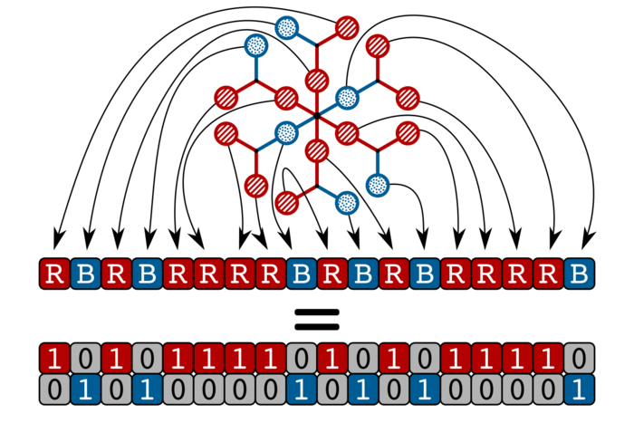{kind=link}
Each net element (a vertex and/or an edge) maps to a vector of binary variables (a list of numbers which may be 0 or 1). Each binary variable of the vector represents a color. For practical reasons, the number of color types of the net is finite and set in advance, thus the length of the vector can be set as finite. The colored net is fully descripted as a \(V \times C_v\) matrix and/or a \(E \times C_e\) matrix. The rows are the net elements and the columns are the color types. If the entry of the m-th color type values 1 for the n-th element, then the n-th net element is m-th colored. Conversely, an entry of the m-th color type valuing 0 means the n-th net element is not m-th colored.
2.2.6.2.2. Constraints¶
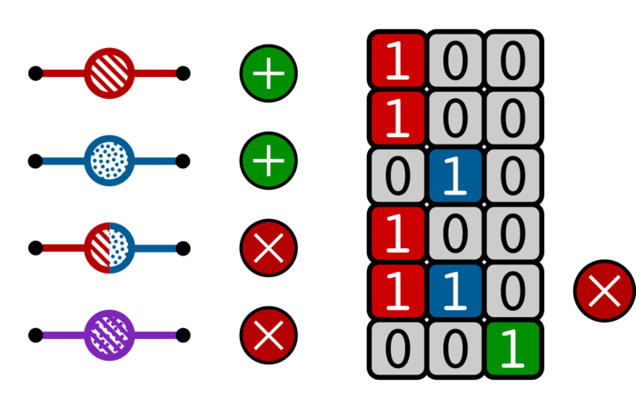{kind=link}
The most important constraint of the model is the color uniqueness. Per each element there is one and only 1-entry and the rest are 0-entries. 2 The summation along the vector equals to 1. In other words, one element cannot be at the same time red and blue. (if you want purple you need another color) That comes from the design choice to map each color to a specific position and/or rotation of a block. This constraint is default and cannot be disabled.
The second most important constraint and the most important for user customization is the global vertex color ratio and/or edge color ratio. The summation of vertex/edge variables along each color type must fulfill the ratio/s in a given ordered list. In other words, the number of colored elements is constraint proportionally to the input list. Since the number of net elements are integer, one cannot expect fractional ratios by design. For instance, an edge color ratio of [2,3,1] means the first, the second, and the third edges must keep a proportion as close as possible to 2:3:1, respectively. For 4 edges, the edges will be 1 first-colored, 2 second-colored, and 1 third-colored. A 1:2:1 ratio is indeed the closest to 2:3:1 coloring an integer number of edges. N.B.: The length of the vertex/edge ratio lists directly induces the number of vertex/edge color types so no further setup is required.
{kind=link}
An alternative to the previous is the local edge color ratio per vertex and/or the vertex color ratio per edge. These constraints are the same but applied locally: for the edges surrounding each vertices, and for the (two) 11 vertices surrounding each edge, respectively. It is stricter than the previous global constraint since the local holds per each of the elements, not for their summation only. 10 It often suits better the chemistry of the framework when specific connectivity must be induced by the block connectors, e.g. “4 carboxylate linkers and 2 nitrogen donors surrounding a paddlewheel” is mapped by “4 red and 2 blue colors around 6-connected vertices”. (see here)
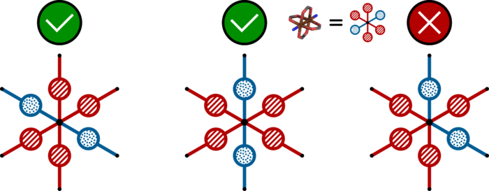{kind=link}
Several other constraints may be applied and a specific guide to write your own constraint will be later issued. As an already implemented example, one can set a constraint on the angle among edges. Changing the sense of comparison, this angle could be close, lower or higher than a target value in radiants. Note that the drawback of geometric constraints - i.e. based on lengths, angles, torsions, etc. - constists of relying on the embedding of the net and not on its algebraic representation, a graph: this may lead to tinker with heuristic values. To mitigate the problem, one could e.g. run a pre-optimization with a purely geometric force field such as TopoFF. 17 This constraint is, however, extremely useful since it may drastically decrease the search space of orders of magnitude.
TBI: selection of atoms. (it works only for the angle between edges constraint)
2.2.6.3. Solver¶
Our solver of choice is the Solver of Constraint Integer Programming [SCIP] as branch-and-cut framework, which is widely spread in the optimization community. It serves to solve the model as detailed above, being pseudo-boolean optimizations part of the constraint integer programming paradigm. That allows to exploit SCIP back-end features, which we keep as black-box for the purpose of this documentation. For further information, SCIP website is here.
The solver finds one solution to the problem with a given set of variables and constraints. This solution represents one of the possible colorings of that net.
A key feature of the solver is it can assess feasibility of the problem: it can answer whether there exists at least one solution for the given problem. The assessment is done without any assumption, for instance the ergodicity hypothesis in case of evolutionary (such as Monte Carlo) algorithms. That assessment prevents to tune convergence parameters and to rely on rules-of-thumb, which are required for the latter algorithms.
The feasibility feature is particularly powerful to assess there exists no solution. Evolutionary algorithms lack this feature and require user’s ingenuity which may be wrong or missing. Conversely, in due time and for a given problem the solver can give an ultimate answer i.e. irrespective to any convergence criterion.
2.2.6.4. Solutions¶
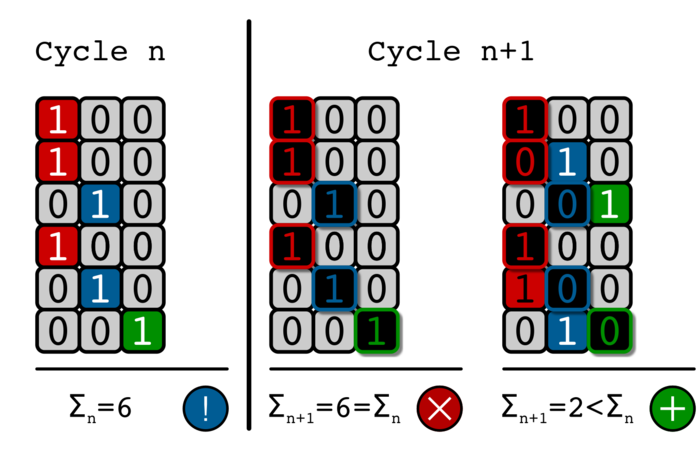{kind=link}
For each iteration, the found solution and its equivalents are removed from the search space of the next iteration. As soon as we removed all the possible solutions out of the search space, then we have found all-and-only of them: no more, no less.
Going technical, two colorings are the same if and only if the summations of their colors in the respective positions equate. That holds due to the color uniqueness (see Constraints): per each net element, the only 1-entry is its color and the remaining entries are 0-entries.
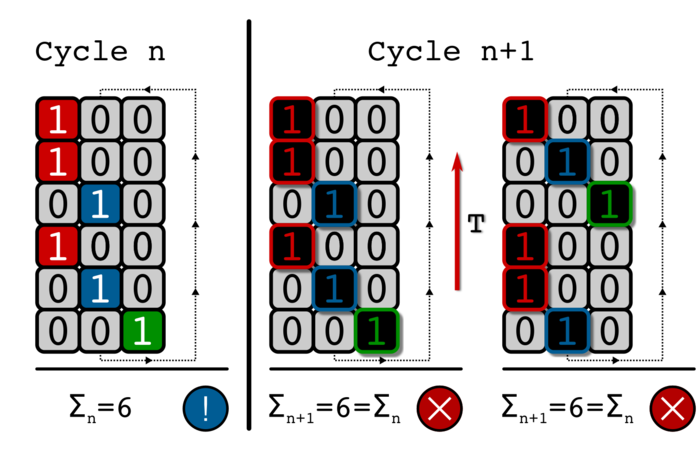{kind=link}
A solution coloring may share the same space group symmetry with other colorings. These colorings are symmetry equivalent and it is enough to choose just one representing all of them since the others can be recovered applying the space group symmetry operations. The chosen set of colorings act as a base of the symmetry solution subspace.
The symmetry permutations of the grey net are applied to the solution to find all the symmetry equivalent solutions, which the user wants not to find again as different solution. Hence, we force these equivalent solutions as negated constraint for the next iteration. (see Loop) TBI: techincal details.
If the user chose not to initialize as permutations the space group symmetry of the grey net, it is possible to get as permutations the space group symmetry of each solution. That may be beneficial for very strict constraints applied on a very large domain space. By default, symmetry always applies but can be turned off. [TBI] (debug purpose)
2.2.6.5. Loop¶
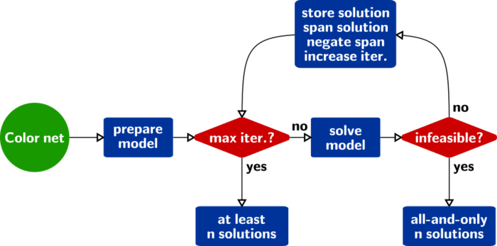{kind=link}
To sum up, the core ingredients of ACAB are (1) a solver that can assess infeasibility of a problem; (2) a symmetryzer that spans equivalent solutions. Here is an overview how ACAB acts:
read grey net;
setup model and maximum iteration
setup variables from the grey net;
setup colors as initial constraints;
set iteration index
- loop
solve the problem
- if the problem is feasible, then:
get the permutations of the solution
set the permutations of the solution as negated constraint of the next iteration
- else:
break
increase iteration index
return solutions found (may be none)
- if iteration index is lower than maximum iteration:
all and only solutions are found (may be zero solutions!)
- else:
a part of the solutions are found
2.2.7. Tests¶
Tests are available with pytest in the directory $MOLSDIR/molsys/addon/acab/tests. You can run them just changing the directory there and type pytest. If everything goes right, all the tests will result as passed. To clean the tests, there is the clean_tests.sh script which can be run with: $MOLSDIR/molsys/addon/acab/tests/clean_tests.sh or directly with ./clean_tests.sh if you are already in the test folder.
There is currently only one test which performs 2,1-edge colorings on different 3,6-connected nets. Each test case checks whether the numer of found structures is equal to the expected number. If it is not, a failure is raised.
An additional constraint is the angle in radiants between the edges with the second color (the minority) around the 6-connected vertices. 3 This last constraint may or may not be applied as follows:
test_nets: no angle constraint;test_nets_loose_axis: an angle constraint greater than 2.6 radiants;test_nets_strict_axis: an angle constraint greater than 3 radiants.
The stricted the constraint applies, the fewer the colorings starting from the same net can be found.
2.2.7.1. Feature tests¶
Feature tests included:
molsys.mol.from_fileread interface formfpxfiles, implicit extension, reading from subfolders;acab.setup_modelsetup ACAB re-initializing the model; (TBT: see what happens when it is called twice after an iteration)acab.setup_ecratio_per_vertexsetup the edge color ratio per each vertex according to a list of ratios;acab.setup_vcratio_per_edgesetup the vertex color ratio per each edge according to a list of ratios.
2.2.8. Technical Details¶
2.2.8.1. File I/O¶
ACAB supports as input net any :py:module:`molsys.fileIO` format. It is highly recommended that the net file format supports connectivity and periodic connectivity, otherwise results cannot be trusted.
For each found coloring, ACAB outputs both mfpx and txyz files. An ACAB output directory contains by default:
the grey symmetry structure
sym.mfpxandsym.txyztype, defining the space group symmetry in which colors are searched;the
colorssubfolder of coloringmfpxfiles to weave frameworks;a
prettysubfolder of viewtxyzfiles of the colorings, cutting out the edges with periodic boundary conditions. N.B.: the pretty view may be misleading since not every edge is visible.
A file type chromo that reads/writes colors in the file is WIP.
2.2.9. Glossary (WiP)¶
ACAB (All Colors Are Beautiful)
RTA (Reverse Topological Approach)
aRTA (advanced Reverse Topological Approach)
block multiplicity
positional multiplicity
orientational multiplicity
crystal net (or topology) [not to be confused with the net of a polyhedron].
net embedding
color:
colored net: a net with colored vertices and/or edges.
coloring: the collective color representation of net elements. Vertex coloring and edge coloring concern vertices and edges, respectively, and they are separated integer sequences. Without further specification, coloring consists of both vertex and edge colorings, thus meaning both the integer sequences.
model
constraint integer programming
constraint programming
integer programming
binary programming
pseudo-boolean function
space group symmetry
automorphism
isomorphism
slot: the surrounding net elements of a net element. It defines the surrounding blocks which a block should be connected to. The slot symmetry group which Just the connectivity is considered as environment???
net element: a vertex or an edge of the net. In the RTA, any block sits on a net element. The barycenter or the centroid of the block is projected onto the net element. For the purpose of coordinates, we consider the edge midpoint. Then, the block is rotated according to its slot and one or more inequivalent positions are found. (see RTA) In aRTA, . Not to be confused with chemical elements.
block: one of the molecular constituents of the framework. It can be a species with no chemical meaning by itself. For instance, the metal paddlewheel [pdw] can be a block with just the COO carboxylate moieties (no further atom after C); the terephthalate [bdc] can be just the aromatic ring without the carboxylate moieties (in formula: C6H4, missing the para functions). A block can be finite like the aforementioned ones, or periodic like the MIL-53 pillar. It is part of the target unit for a force field based on blocks, for instance MOF-FF.
variable
constraint
2.2.10. Improvements¶
Here is the space to write improvements for the program.
2.2.10.1. New Tests¶
test number of solutions after translation of net. They must be the same number, otherwise there is a problem.
2.2.10.2. New Examples¶
examples with vertex set as [1] so that the colored edges and the uncolored vertices can be seen both (and the backbone is recognizable)
2.2.10.3. Clearer Documentation¶
more pictures, particularly of examples.
fix language
check and finish glossary
2.2.11. Credits¶
ACAB is authored and implemented by R. Amabile. The net coloring concept and the advanced Reverse Topological Approach is promoted by R. Schmid too, which also implemented a working MC solver. (C) 2018 Computational Materials Chemistry (Germany).
This project has received funding from the European Union’s Horizon 2020 research and innovation programme under the Marie Sklodowska-Curie grant agreement No: 641887. (DEFNET)
2.2.12. License¶
ACAB is GPL v3.
PySCIPOptis MIT licensed.SCIPis licensed under ZIB Academic License. It is free for academic and non-commercial purpose. If you cannot comply with these conditions, ask SCIP developers for a custom license.
2.2.13. Notes¶
- 1
Here I leave on purpose the discussion to scholars about which net a framework belongs to. It depends on how the blocks are chosen. For instance, which is DUT-49 net? If we take the paddlewheel and the whole organic linker as blocks, then it is nbo. If the organic linker is split into the carbazole and the biphenyl moieties, then it is tfb. Anyway, as long as blocks are given in advance, the result of the deconstruction is univocal. The same can’t be said for the construction, which is the crunch of the whole RTA story.
- 2
For a more intuitive understanding and as first though, one could map colors into increasing integer - 0,1,2,… - instead of increasing position of the only 1 in a list of 0’s: [1,0,0,…], [0,1,0,…], [0,0,1,…], etc.. However, the binary vector representation overcomes the integer representation for an easier and faster implementation of the constraints. All-in-all, colors are back-end defined, so there is no repercussion on user’s interface.
- 3
Which are 2 by proportion: 6/(2+1)*1.
- 4
Implementation based on D’Hont method. This may result in uncanny ratios, for instance a
[1,1]ratio of 5 edges implies 3 red edges and 2 blue edges.- 5(1,2,3)
3 possible colorings: red-red-blue; red-blue-red; blue-red-red. The total number in formula: 3!/(2!1!)=3, where 3 is the number of edges to be colored, 2 is the number of red edges and 1 is the number of blue edges. See also permutation of multisets, or anagram of finite words. I strongly advice to take a look at the figure here <https://upload.wikimedia.org/wikipedia/commons/4/4f/Permutations_with_repetition.svg>_, more valuable than thousand words.
- 6
As seen in 5: the number of vertices are 3 per unit cell, for a total of 24 edges in the 2x2x2 supercell. 16 are reds and 8, so the total number of possible colorings is: 24!/(16!*8!) = 735471.
- 7
The same formula as in 5 holds, so for a NxNxN supercell we have N!/[(N/2)!*(N/2)!]. It is just an upper limit of the possible structures since it does not take into consideration the symmetry of the colored nets. To take them into consideration, one needs to count periodic strings (or words). If curiosity drives you, take a look here. 14 N.B.: Algebraic combinatorics is an extremely fascinating world. For a materials researcher with a standard theoretical background, it can be demanding to enter this world.
- 8
An early-staged idea could be to find the possible colored nets for smaller supercells and assign a “color” to each of them. This “color” will not be on the level of the vertices/edges, but directly on the whole cell: it is a metacolor. For instance, still on the JAST-1 case, one could take the 2 solutions of the 2x2x2 cell and the 1 solution of the 1x1x1 cell as basis to color fast any supercell of a pillared colored net. By the way, implementation is not on the menu, we are currently at the stage of ideas.
- 9
Intuitively, any right angle you choose keeps an elongated octahedron in a regular octahedral cage the same.
- 10
Here holds the same consideration as between the balance equation and the detailed balance equation. If an intensive constraint holds for each of the partition of a domain, then it holds for the domain as a whole. The inverse is not true, e.g. the constraint could hold on average and not for the single elements (there could be an accumulation of color 0 on one side and of color 1 on another side)
- 11
Crystal nets have at most 1 edge linking each pair of vertices. It is said there is no parallel edge.
- 12
Keep in mind that indices start with 0 instead of 1 (python convention). So that the first color is 0, the second color is 1, etc. The index of the color you select is the same as the index of its ratio:
cratio=[2,1]means color 0 has ratiocratio[0] == 2and color 1 hascratio[1] == 1.- 13
weaveris slightly different since it minimizes the different in orientation of the block connectors against the slot connectors.
2.2.14. References¶
- 14
S.I. Adian, Classifications of periodic words and their application in group theory. Proceedings of the Burnside Workshop 1977. (accessible here)
- 15
J.F. Eubank, L. Wojtas, M.R. Hight, T. Bousquet, V.Ch. Kravtsov, and M. Eddaoudi, The Next Chapter in MOF Pillaring Strategies: Trigonal Heterofunctional Ligands To Access Targeted High-Connected Three Dimensional Nets, Isoreticular Platforms. 2011.
- 16(1,2,3,4)
Bureekaew, V. Balwani, S. Amirjalayer, and R. Schmid, Isoreticular isomerism in 4,4-connected paddle-wheel metal–organic frameworks: structural prediction by the reverse topological approach., CrystEngComm 2015.
- 17(1,2)
Keupp and R. Schmid, TopoFF: MOF structure prediction using specifically optimized blue prints. Faraday Discussions 2018.